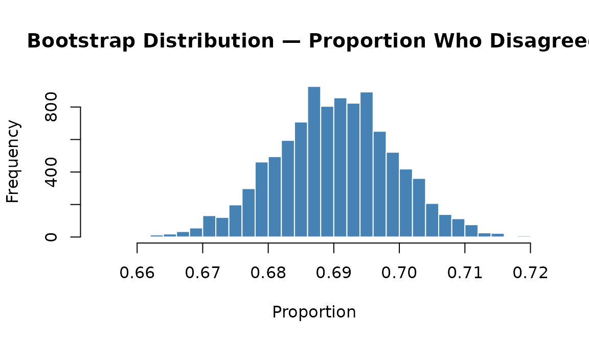
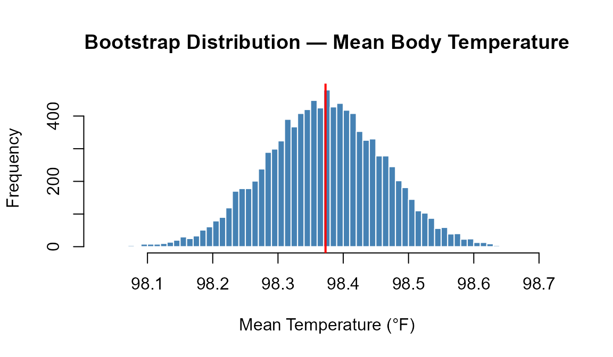
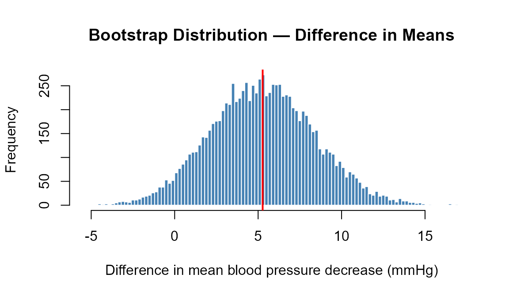
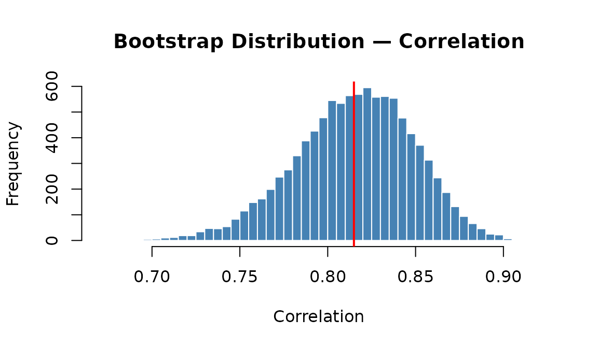
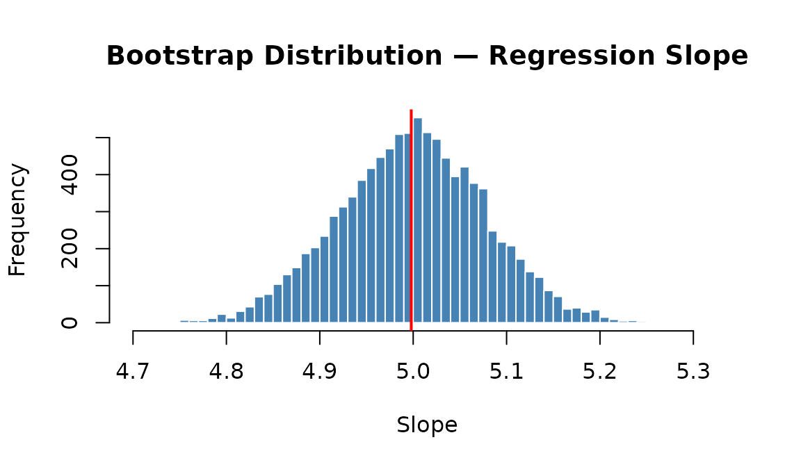

Randomization (Bootstrap) Confidence Intervals
class-summary-randomization-cis.RmdOverview
A bootstrap confidence interval estimates the uncertainty of a statistic by repeatedly resampling the observed data with replacement. Because it relies on the data itself rather than a mathematical formula, it works for almost any statistic and requires very few distributional assumptions.
Every bootstrap CI in this guide follows the same three steps:
-
Create a bootstrap distribution — use
do_it()to resample with replacement many times, computing the statistic each time. -
Calculate the bootstrap SE —
SE_boot <- sd(boot_dist). -
Construct the CI —
obs_stat ± cnorm(C) × SE_boot.
In this article:
Also in Class Summaries:
Key SDS1000 functions.
do_it(n) * { expr } repeats an expression n
times. sample(data, n, replace = TRUE) resamples with
replacement. get_proportion(v, "cat") computes a
proportion. resample_pairs(v1, v2) resamples two paired
vectors together. cnorm(C) gives the normal critical value
for confidence level C.
One Proportion
When to use: A single categorical variable with two outcomes; estimate the population proportion π.
Example (class 11): A survey asked 2625 people whether they agreed with “There is only one true love for each person.” 1812 disagreed. Compute a 90% bootstrap confidence interval for the proportion who disagreed.
Step 1: Compute the observed statistic
believes_in_true_love <- c(rep("FALSE", 1812), rep("TRUE", 2625 - 1812))
obs_prop <- get_proportion(believes_in_true_love, "FALSE")
obs_prop## FALSE
## 0.6902857Step 2: Create the bootstrap distribution
Resample the data with replacement 10,000 times, computing the proportion each time:
set.seed(2291)
n <- length(believes_in_true_love)
boot_dist <- do_it(10000) * {
boot_sample <- sample(believes_in_true_love, n, replace = TRUE)
get_proportion(boot_sample, "FALSE")
}
hist(boot_dist, breaks = 60,
main = "Bootstrap Distribution — Proportion Who Disagreed",
xlab = "Proportion",
col = "steelblue", border = "white")
abline(v = obs_prop, col = "red", lwd = 2)
Step 3: Compute the SE and construct the CI
SE_boot <- sd(boot_dist)
# 90% CI
CI <- c(obs_prop - cnorm(0.90) * SE_boot,
obs_prop + cnorm(0.90) * SE_boot)
CI## FALSE FALSE
## 0.6754240 0.7051474We are 90% confident that the true proportion of people who disagree that there is only one true love for each person is between 0.675 and 0.705.
One Mean
When to use: A single quantitative variable; estimate the population mean μ. The bootstrap is especially useful when the data is skewed or the sample is small, since it does not require a normality assumption.
Example (class 11/12): A sample of 50 body temperatures from Mackowiak et al. (1992). Compute a 95% bootstrap confidence interval for the mean body temperature.
Step 1: Compute the observed statistic
set.seed(9910)
# Simulated to match class 11 Lock5Data body temperature sample
body_temps <- rnorm(50, mean = 98.25, sd = 0.73)
obs_mean <- mean(body_temps)
obs_mean## [1] 98.37283Step 2: Create the bootstrap distribution
set.seed(4471)
n <- length(body_temps)
body_temps <- body_temps
boot_dist <- do_it(10000) * {
boot_sample <- sample(body_temps, n, replace = TRUE)
mean(boot_sample)
}
hist(boot_dist, breaks = 80,
main = "Bootstrap Distribution — Mean Body Temperature",
xlab = "Mean Temperature (°F)",
col = "steelblue", border = "white")
abline(v = obs_mean, col = "red", lwd = 2)
Step 3: Compute the SE and construct the CI
SE_boot <- sd(boot_dist)
# 95% CI
CI_95 <- c(obs_mean - cnorm(0.95) * SE_boot,
obs_mean + cnorm(0.95) * SE_boot)
# 80% CI
CI_80 <- c(obs_mean - cnorm(0.80) * SE_boot,
obs_mean + cnorm(0.80) * SE_boot)
# 99% CI
CI_99 <- c(obs_mean - cnorm(0.99) * SE_boot,
obs_mean + cnorm(0.99) * SE_boot)
CI_80## [1] 98.25793 98.48773
CI_95## [1] 98.19711 98.54855
CI_99## [1] 98.14189 98.60376Notice how wider confidence levels produce wider intervals. We are 95% confident that the mean human body temperature is between 98.2°F and 98.55°F.
Wider CI = more confident. A 99% CI is wider than a 95% CI, which is wider than an 80% CI. There is always a trade-off: greater confidence requires sacrificing precision.
Difference of Two Means
When to use: A quantitative variable measured in two independent groups; estimate . Resample each group separately with replacement, keeping group sizes fixed.
Example: Using the calcium supplement study from class 17, compute a 95% bootstrap confidence interval for the difference in mean blood pressure decrease (treatment − control).
Step 1: Compute the observed statistic
treat <- c( 7, -4, 18, 17, -3, -5, 1, 10, 11, -2)
control <- c(-1, 12, -1, -3, 3, -5, 5, 2, -11, -1, -3)
obs_diff <- mean(treat) - mean(control)
obs_diff## [1] 5.272727Step 2: Create the bootstrap distribution
Resample each group independently with replacement:
set.seed(6174)
n_treat <- length(treat)
n_control <- length(control)
treat <- treat
control <- control
boot_dist <- do_it(10000) * {
boot_treat <- sample(treat, n_treat, replace = TRUE)
boot_control <- sample(control, n_control, replace = TRUE)
mean(boot_treat) - mean(boot_control)
}
hist(boot_dist, breaks = 80,
main = "Bootstrap Distribution — Difference in Means",
xlab = "Difference in mean blood pressure decrease (mmHg)",
col = "steelblue", border = "white")
abline(v = obs_diff, col = "red", lwd = 2)
Step 3: Compute the SE and construct the CI
SE_boot <- sd(boot_dist)
CI <- c(obs_diff - cnorm(0.95) * SE_boot,
obs_diff + cnorm(0.95) * SE_boot)
CI## [1] -0.8689757 11.4144302The 95% CI includes zero, consistent with the hypothesis test result. However, the interval also extends well above zero, meaning a meaningful calcium effect remains plausible.
Correlation
When to use: Two paired quantitative variables;
estimate the population correlation ρ between them. Because x and y are
paired, we must resample both together using
resample_pairs() so that every resampled (x, y) pair stays
matched — exactly the same approach as for the regression slope.
Example (class 18): Sugar content and calorie content for a sample of 77 breakfast cereals. Compute a 95% bootstrap confidence interval for the correlation between sugar and calories.
Step 1: Compute the observed statistic
set.seed(1123)
n <- 77
sugar <- runif(n, 0, 15)
calories <- 90 + 3.5 * sugar + rnorm(n, sd = 12)
obs_cor <- cor(sugar, calories)
obs_cor## [1] 0.8149169Step 2: Create the bootstrap distribution
Use resample_pairs() to resample both variables
together, then recompute cor() each time:
set.seed(8833)
sugar <- sugar
calories <- calories
boot_dist <- do_it(10000) * {
resampled <- resample_pairs(sugar, calories)
resampled_sugar <- resampled$vector1
resampled_calories <- resampled$vector2
cor(resampled_sugar, resampled_calories)
}
hist(boot_dist, breaks = 80,
main = "Bootstrap Distribution — Correlation",
xlab = "Correlation",
col = "steelblue", border = "white")
abline(v = obs_cor, col = "red", lwd = 2)
Step 3: Compute the SE and construct the CI
SE_boot <- sd(boot_dist)
CI <- c(obs_cor - cnorm(0.95) * SE_boot,
obs_cor + cnorm(0.95) * SE_boot)
CI## [1] 0.7485002 0.8813337We are 95% confident that the true correlation between sugar and calorie content in cereals is between 0.749 and 0.881. Since the interval lies entirely above zero, the data provide good evidence of a positive association.
Regression Slope
When to use: Two paired quantitative variables;
estimate the slope β₁ of a simple linear regression model. Because x and
y are paired, resample both together using resample_pairs()
— this preserves the pairing structure.
Example (class 25): Cigarette consumption per capita and lung cancer rates across 44 U.S. states. Compute a 95% bootstrap confidence interval for the regression slope.
Step 1: Compute the observed statistic
set.seed(2947)
cigs_per_capita <- runif(44, min = 10, max = 45)
cancer_rate <- 2 + 0.005 * cigs_per_capita * 1000 + rnorm(44, sd = 5)
lung_lm <- lm(cancer_rate ~ cigs_per_capita)
obs_slope <- coef(lung_lm)["cigs_per_capita"]
obs_slope## cigs_per_capita
## 4.997922Step 2: Create the bootstrap distribution
Use resample_pairs() to resample both variables
together, keeping pairs intact:
set.seed(3109)
cigs_per_capita <- cigs_per_capita
cancer_rate <- cancer_rate
boot_dist <- do_it(10000) * {
resampled <- resample_pairs(cigs_per_capita, cancer_rate)
resampled_cigs <- resampled$vector1
resampled_cancer <- resampled$vector2
coef(lm(resampled_cancer ~ resampled_cigs))["resampled_cigs"]
}
hist(boot_dist, breaks = 80,
main = "Bootstrap Distribution — Regression Slope",
xlab = "Slope",
col = "steelblue", border = "white")
abline(v = obs_slope, col = "red", lwd = 2)
Step 3: Compute the SE and construct the CI
SE_boot <- sd(boot_dist)
CI <- c(obs_slope - cnorm(0.95) * SE_boot,
obs_slope + cnorm(0.95) * SE_boot)
CI## cigs_per_capita cigs_per_capita
## 4.844075 5.151769We are 95% confident that for each additional hundred cigarettes smoked per capita, the lung cancer rate increases by between 4.8441 and 5.1518 cases per 100,000 people.
Why resample_pairs() and not
sample(..., replace = TRUE)? For paired data, we
must resample observations (rows) together to preserve the relationship
between x and y. Resampling x and y independently would destroy the very
correlation we are trying to measure.
Quick Reference
| Parameter | Resample method | CI formula |
|---|---|---|
| One proportion |
sample(data, n, replace=TRUE) →
get_proportion()
|
obs ± cnorm(C) * sd(boot_dist) |
| One mean |
sample(data, n, replace=TRUE) →
mean()
|
obs ± cnorm(C) * sd(boot_dist) |
| Diff. of two means |
sample(group, n, replace=TRUE) for each group |
obs ± cnorm(C) * sd(boot_dist) |
| Correlation |
resample_pairs(x, y) → cor()
|
obs ± cnorm(C) * sd(boot_dist) |
| Regression slope |
resample_pairs(x, y) → coef(lm(...))
|
obs ± cnorm(C) * sd(boot_dist) |